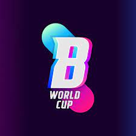

¿Qué es la Balloon World Cup?
La Balloon World Cup es un evento deportivo organizado por el streamer Ibai LLanos y el futbolista Gerard Piqué, siendo Port Aventura World la sede del mismo.
La idea principal surge a través de una publicación en Twitter por parte de Ibai, en el que mencionaba un Tik Tok de dos hermanos en los que jugaban con un globo:
Es a partir de una pequeña broma en Twitter que ha conseguido realizar un evento mundial con hasta 20.000 euros de prize pool y el patrocinio de grandes empresas como lo son Amazon, Yoigo, VolksWagen, Oreo, Kelme o Mentos. Un evento que ganó Perú por 6 a 2 contra Alemania, y un tercer puesto para España, que venció a Brasil para obtener el tercer puesto.